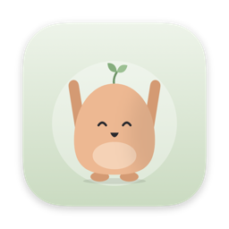
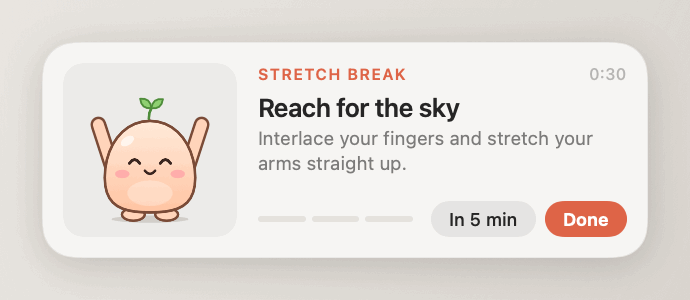
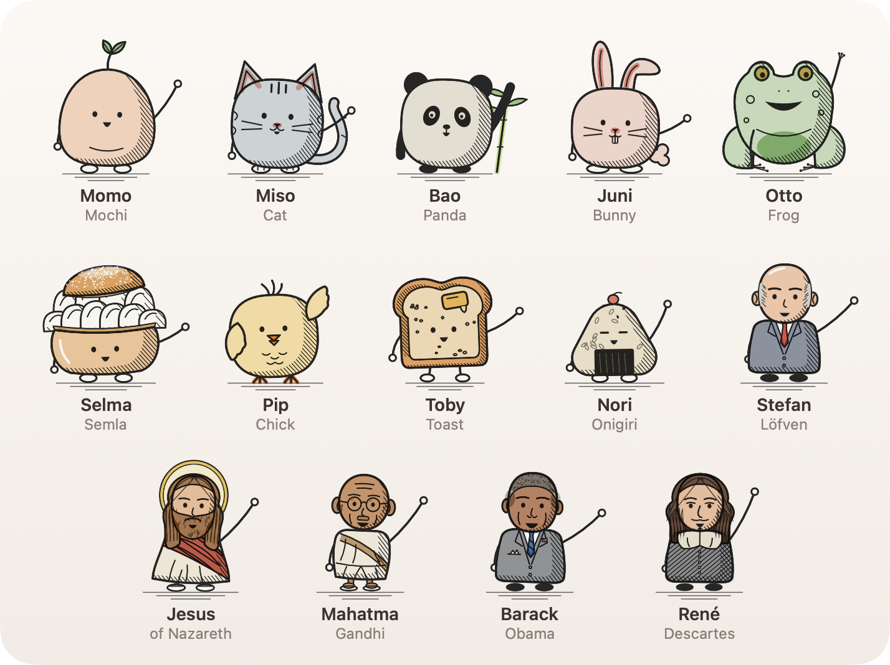

UnknotEvery 20 minutes a member of the Stretch Crew drops down from your Mac's camera notch with three quick stretches. Thirty seconds later it goes back. It never takes focus, so you can finish your sentence first.
Free and open source · macOS 14 or later · Apple silicon and Intel · About 2 MB
Or install it from Terminal, which skips the security prompt below:
curl -fsSL https://raw.githubusercontent.com/Emsurenar/unknot/main/install.sh | bash

Unknot lives in the menu bar as a small frog. Click it to see when the next break is, stretch right away or pause reminders.
A break starts as a drop of black inside the notch and opens into a glass panel. Without a notch it unfolds from under the menu bar.
Time away counts as a break. It waits while you're on a call and, if you like, while an app is in full screen. Working hours are optional.
Neck, shoulders, back, wrists, eyes and breathing, each with its own animation and live cues like Breathe in · 3.
Fourteen characters drawn like small engravings, from Otto the frog to René Descartes. A random one leads each break, or keep only your favourites.

Unknot isn't signed with a paid Apple Developer ID, so macOS asks you to confirm once. The Terminal install above doesn't need this.
No account, no tracking, no ads. Settings and statistics stay on your Mac. The only network request is an optional daily check for a new version on GitHub, and updates install only when you click.